Google:Inception&MobileNets
ResNet网络学习；整理Google的Inception V1到V4模块，参考文章：大话CNN经典模型；阅读《MobileNets: Efficient Convolutional Neural Networks for Mobile Vision Applications》的总结
ResNet
之前接触过ResNet网络，不过老师作业中给了另一个学习视频，所以这里再进行一下学习整理
残差
- 在传统的卷积神经网络中，CNN其实就是一个函数拟合的过程，对于输入x，通过CNN这样一个复合函数，来得到预测输出
- 不过随着网络深度的增加，会出现网络退化，导致学习能力下降，难以得到预期的函数效果H(x)
- 不过发现，如果让网络学习达到F(x) = H(x) - x的函数效果（Residual，残差）则会容易许多
- 而最终我们预期得到的H(x)通过H(x) = F(x) + x得到
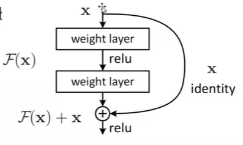
- 其中右侧x直接连接到下一层输入，称之为恒等映射（短接）
网络结构
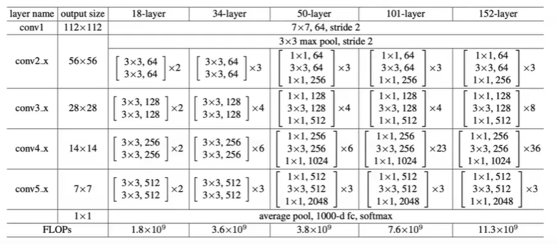
- 常见的ResNet一般由5个stage组成，每个stage又包含若干个block，每个block中包含多个卷积层
- 通过这样的结构划分，可以增加代码的可扩展性
- 在最后一层，设置了一个Global Average pool
- 用来替代全连接层
- 参数更少，避免出现过拟合
- 在网络的50层结构以上的时候会出现Bottle Neck（瓶颈）
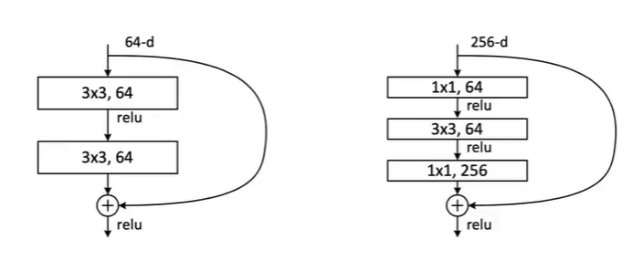
- 在入口处通过1x1卷积，来进行降维操作。出口处通过1x1卷积，再恢复原有维度数
- 通过这样的形式来减少参数量和计算量
- 在跟着视频学习的时候，也跟着老师一起手敲了一遍ResNet的模型搭建代码，感觉还是收获很多的，之前一直是看一些现成的网络模型代码，感觉能看懂就不再进一步钻研了，而当自己去亲手敲代码的时候才明白自己的不足之处——所谓“纸上得来终觉浅，绝知此事要躬行”吧！！
Inception
原始的Inception结构
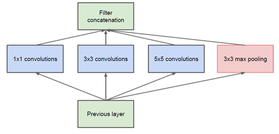
这是Google提出的原始的Inception模块，输入通过不同的卷积和池化操作，然后在将每部分的结果进行堆叠，得到输出。具体实例如下：

- 其中不同的卷积核操作之后，得到的feature map的尺寸大小是不一样的，然后对其进行padding操作恢复原来尺寸大小，再将多个卷积核的操作结构进行堆叠即可
- 同时在每一个卷积层之后都要进行ReLU操作，增加非线性的拟合能力
- 通过这种操作，有两方面好处
- 增加了网络的宽度
- 增加了网络对尺度的适应性
- 不过也存在着问题，即在多个Inception模块后，输出的feature map会十分厚，导致计算量增大。
Inception V1
为解决上述问题，通过在3x3前、5x5前以及max pooling后分别加上了1x1的卷积核，来达到降维的目的。
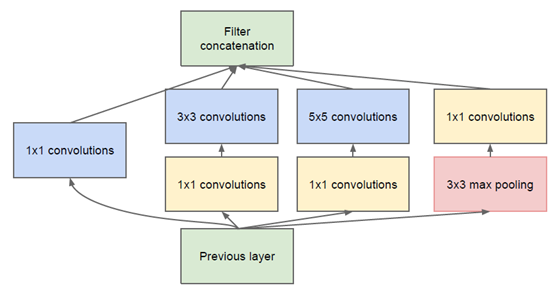

比如，上一层的输出为100x100x128，经过具有256个通道的5x5卷积层之后(stride=1，pad=2)，输出数据为100x100x256，其中，卷积层的参数为128x5x5x256= 819200。而假如上一层输出先经过具有32个通道的1x1卷积层，再经过具有256个输出的5x5卷积层，那么输出数据仍为为100x100x256，但卷积参数量已经减少为128x1x1x32 + 32x5x5x256= 204800，大约减少了4倍。
Inception V2
-
卷积分解
-
感受野的越大，那么在卷积的过程中，便能够同时捕获更多的图像信息，不过相应的参数量也会较大（5x5的卷积核的参数为25个）。因此Google提出了一种卷积分解的方法。
-
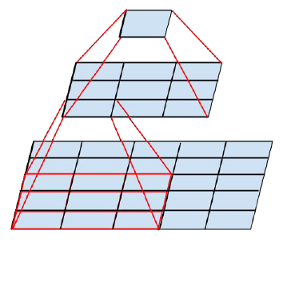
- 5x5的图像块，通过5x5的卷积核可以直接得到最终对应的feature map。参数个数为25
- 5x5的图像块，先通过3x3的卷积核得到3x3的feature map，然后再进行一次卷积得到最终的feature map。参数个数为9+9=18
- 同时大量实验表明，这种替换方案并不会造成表达缺失
-
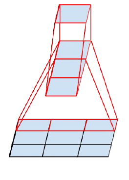
-
同时，任意nxn的卷积都可以通过1xn卷积后接nx1卷积来替代
-
在中度大小的特征图（feature map）上使用效果才会更好（特征图大小建议在12到20之间）
-
-
因此原有的一个1x1→5x5卷积核
- 可以先分解成1x1→3x3→3x3
- 然后进一步分解得到1x1→1x3→3x1→1x3→3x1
-
-
降低feature map大小
- 先卷积，再池化
- 这样操作，虽然保留了特征信息，但在本层的计算量并没有减少
- 先池化，再卷积
- 先进行池化操作，可能会导致部分特征消失
- 为了同时保持特征表示且降低计算量，使用以下结构（使用两个并行化的模块来降低计算量（卷积、池化并行执行，再进行合并））
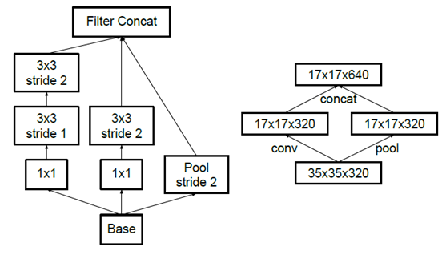
- 先卷积，再池化
Inception V3
对卷积核进行分解，增加网络深度，同时每增加一层都要进行ReLU操作，增加网络的非线性（增加非线性激活函数使网络产生更多独立特征，表征能力更强，训练更快）。
Inception V4
- 将Inception模块与ResNet的残差相结合。
- 利用残差结构来进一步改进Inception V3
- 原始残差结构
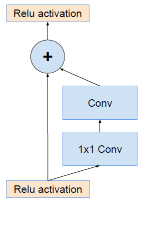
- 与Inception相结合
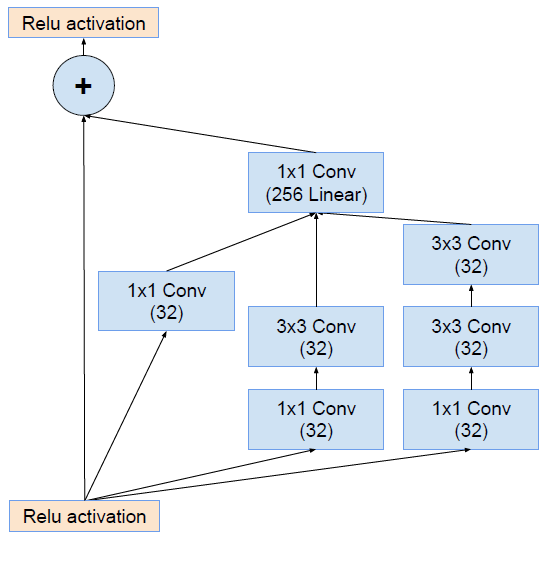
MobileNets
学习阅读了《MobileNets: Efficient Convolutional Neural Networks for Mobile Vision Applications》，然后整理一下学习的主要内容。
简述
文章中介绍的MobileNets基于流线型架构，使用深度可分离的卷积（depthwise separable convolutions）来构建轻量级深度神经网络。
文章介绍了一种网络结构和两种超参数，从而构建一个小规模、低延迟的模型，从而应用于各种特定的场景中。
MobileNets框架
深度可分离卷积（Depthwise Separable Conv）
在MobileNet中，将传统的标准卷积进行分解，得到一个深度卷积（depthwise convolution）和一个1x1的点卷积（pointwise convolution）。其实现原理可以理解为是一种矩阵的因式分解。在进行深度卷积的时候，每个卷积核只在一个对应的channel上进行卷积操作，接着在点卷积的过程中，将卷积操作后的channel进行组合操作。
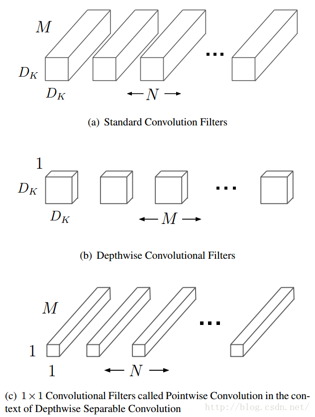
这是论文中的图例，我在网上找到了更好理解的图示
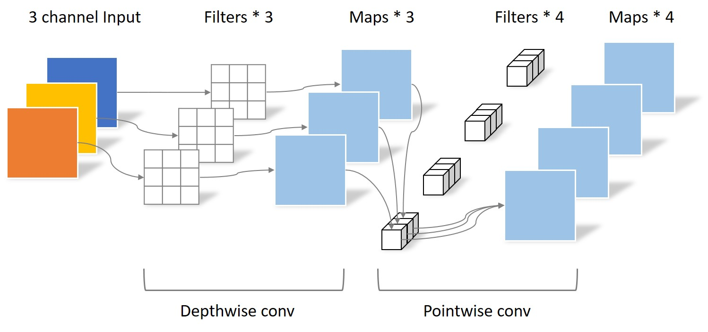
- 假如当前输入为19x19x3
- 标准卷积：3x3x3x4（stride = 2, padding = 1），那么得到的输出为10x10x4
- 深度可分离卷积：
- 深度卷积：3x3x1x3（3个卷积核对应着输入的三个channel），得到10x10x3的中间输出
- 点卷积：1x1x3x4，得到最终输出10x10x4
- 一个标准的卷积层以大小的feature map F作为输入，然后输出一个的feature G
- 卷积核K的参数量为
- 标准卷积的计算量为
- 深度可分离卷积的计算量为
- 卷积核K的参数量为
- MobileNet使用了大量的3 × 3的深度可分解卷积核，极大地减少了计算量（1/8到1/9之间），但准确率下降的很小
网络结构和训练
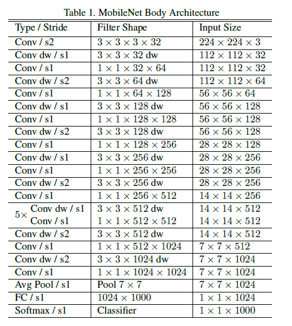
MobileNet第一层采用标准卷积，其它层均采用文章中 提出的深度可分解卷积。每一层后面跟着一个batchnorm和ReLU非线性激活函数，除了最后一层全连接层。在最后的全连接层之后直接输入到softmax层进行分类。网络中的下采样操作是采用带stride的卷积实现的。
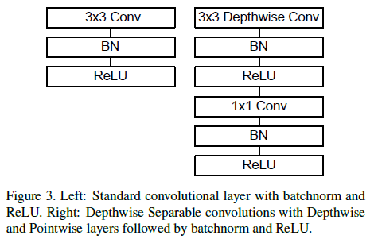
上图对比了标准卷积与深度可分解卷积的结构。
在MobileNet中95％的计算时间用于有75％的参数的1×1点卷积。
宽度因子（Width Multiplier: Thinner Models）
- 宽度乘数α的作用是将每一层的网络宽度变瘦
- 是一个属于(0,1]之间的数，附加于网络的通道数
- 对于一个给定的层和一个宽度乘数，输入通道M变成M，输出通道N变成N
- 常用的配置为1,0.75,0.5,0.25；当等于1时就是标准的MobileNet
- 通过参数可以非常有效的将计算量和参数量减少到原来的倍。计算量为
分辨率因子（Resolution Multiplier: Reduced Representation）
- 分辨率乘数用来改变输入数据层的分辨率
- 将其应用于输入图像，然后通过相同的乘数来减少每一层的内部表示
- ∈（0，1]通常是隐式设置的，因此网络的输入分辨率为224、192、160或128
- = 1是基准MobileNet，而<1是简化的计算MobileNets
- 可以有效的将计算量和参数量减少到原来的倍。与宽度因子结合，其计算量为
令和都小于1，可以构建更少参数的mobilenet。下面是一个具体参数设置下，网络计算量和参数数目的变化情况。
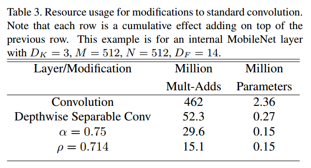
实验
使用相同的MobileNet的架构，在使用可分离卷积的情况下，其精度值略有下降（下降了1%），但其所hi用的参数量仅为1/7。
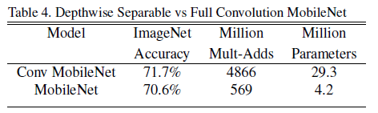
Model Choices
在面对“是更浅的网络更好，还是更瘦的网络更好呢？”这样的问题的时候，作者设计了参数和计算量相近的两个网络进行了比较，其结论是相对而言。
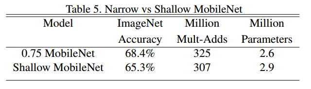
alpha和rho的定量影响
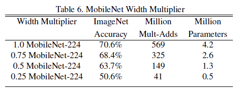
可以看到，超参数减小的时候，模型准确率随着模型的变瘦而下降。
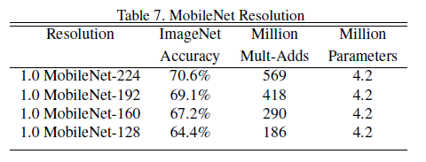
超参数减小的时候，模型准确率随着模型的分辨率下降而下降。
能够看出来，两个超参数的引入，都会导致模型准确率的下降，降低MobileNet的性能表现，不过更重要的是在计算量和准确率之间、模型大小和准确率之间的一个取舍和权衡。